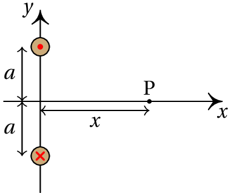
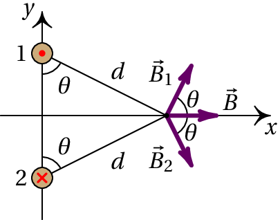
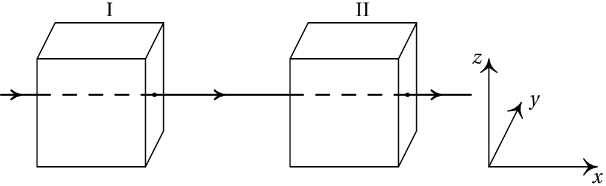
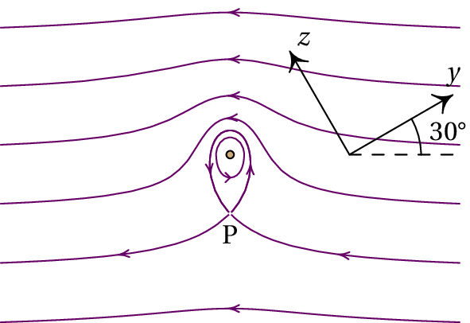

Considere dois fios de cobre, retilíneos e paralelos, de 60 cm de comprimento, distanciados de 9 cm e com raios de 2 mm e 3 mm. Calcule o valor da força magnética entre os fios quando cada um deles for ligado a uma f.e.m. de 1.5 V. (Use o valor da resistividade do cobre à temperatura ambiente: 17 nΩ·m.)
As resistências dos fios, e , calculam-se multiplicando a resistividade do cobre pelo comprimento do fio, dividido pela área da secção transversal do fio (unidades SI):
A corrente em cada fio é igual à diferença de potencial sobre a resistência do fio:
O módulo da força magnética entre os dois fios é:
Comentários: A diferença de potencial de 1.5 V em cada fio conduz a correntes de milhares de ampere, que queimavam um fio de apenas uns poucos milímetros de raio. Se fosse usada uma pilha de 1.5 V, a resistência interna provavelmente seria maior do que a resistência de cada fio; como tal, a diferença de potencial no fio seria muito menor do que 1.5 V e a própria pilha aqueceria com o fio. Para realizar esse tipo de experiências para medir a força magnética entre dois fios de cobre, costuma ligar-se uma resistência em série para reduzir a intensidade da corrente, e a força magnética a medir será muito menor.
A figura mostra dois fios compridos e paralelos, no plano perpendicular a eles. A intensidade da corrente em cada fio é a mesma, , mas com sentidos opostos, como indicam o ponto e o x nos dois fios. (a) Represente graficamente os vetores de campo magnético devido a cada fio e o campo magnético resultante no ponto P. (b) Encontre a expressão do módulo do campo magnético em qualquer ponto P sobre o eixo , em função da distância de P à origem.
(a) No plano , as linhas do campo devido a fio de cima são circunferências com centro no fio, no sentido contrário aos ponteiros do relógio. No ponto P, o vetor é perpendicular ao segmento entre P e o fio, no sentido indicado na figura seguinte. As linhas do campo devido ao fio de baixo rodam no sentido dos ponteiros do relógio e no ponto P o campo é perpendicular ao segmento entre P e esse fio, como mostra a figura:
Como os dois fios estão à mesma distância do ponto P, e transportam correntes com a mesma intensidade, os módulos de e são iguais. E como o ângulo que cada um desses vetores faz com o eixo dos é o mesmo, o campo resultante em P, , será no sentido positivo do eixo dos , tal como mostra a figura acima.
(b) Os módulos dos dois campos no ponto P são:
O campo resultante, , no sentido positivo do eixo dos , tem módulo igual à soma das componentes de e
Um feixe de protões desloca-se com velocidade constante , segundo o eixo dos , atravessando duas regiões, I e II, caraterizadas do seguinte modo: em I, existe um campo magnético, e em II, coexistem um campo magnético, , e um campo elétrico, . Todos os campos são uniformes nas regiões em que foram definidos e anulam-se fora delas. O peso dos protões não é significativo. Quais as condições a que devem obedecer os campos e para que o feixe não sofra qualquer perturbação no seu movimento, enquanto atravessa duas regiões? Se em vez de protões, fosse um feixe de eletrões, as condições estabelecidas manter-se-iam?
A velocidade de cada protão é igual a,
Na região I, a força magnética que atua sobre cada protão é,
Para que o feixe não seja desviado, a duas componentes e da força devem ser nulas, ou seja, . O campo na região I tem então a forma geral , onde pode ter qualquer valor, positivo ou negativo. Como tal, basta com que o campo magnético na região I seja na mesma direção da velocidade dos protões para que não sejam desviados.
Na região II é necessário acrescentar a força elétrica:
Para que a componente seja nula, é necessário , e para que a componente seja nula, é necessário . Como tal, a forma geral do campo magnético na região II é a seguinte
onde pode ter qualquer valor, positivo ou negativo. Ou seja, o campo magnético na região II deverá ter uma componente perpendicular à velocidade e ao campo elétrico, com módulo igual ao módulo do campo elétrico dividido pela velocidade, e pode ter também uma componente paralela à velocidade.
Se o feixe fosse composto por eletrões, ou qualquer outro tipo de partículas com carga, as condições obtidas seriam as mesmas, já que os resultados não dependem do valor de nem da massa das partículas.
Comentários: Observe-se que na região II o campo magnético necessário para que as partículas não sejam desviadas depende da velocidade das partículas. Como tal, na região II há um filtro de velocidades, em que as partículas com velocidade passam sem serem desviadas, mas as partículas com velocidades diferentes desse valor serão desviadas.
A figura mostra as linhas de campo magnético de um fio com corrente, dentro de um campo magnético uniforme ; o fio é perpendicular à folha e os eixos e foram escolhidos sobre o plano da folha. (a) Escreva o versor na direção do campo externo, usando o sistema de eixos dado.(b) Escreva o vetor unitário na direção da corrente no fio. (c) Calcule e represente o vetor unitário na direção da força sobre o fio. (d) Considerando que A e se o valor da força sobre o fio, por unidade de comprimento, é 2×10-5 N/m, calcule a distância até o ponto P.
(a) O campo externo aponta da direita para a esquerda, que no sistema de eixos é:
(b) Na vizinhança do fio, as linhas de campo rodam no sentido contrário dos ponteiros do relógio, indicando que a corrente do fio é para cá da folha, ou seja, na direção de que é o versor .
(c) A direção e sentido da força é a mesma de , ou seja,
Não é necessário dividir pelo módulo do vetor, porque este vetor já tem módulo unitário. Observe-se que a direção e sentido da força é de cima para baixo na figura.
(d) A força magnética sobre o fio é produzida pelo campo externo . Usando a expressão para a força magnética sobre o fio por unidade de comprimento, , obtém-se o módulo do campo externo (unidades SI):
No ponto P, o campo produzido pelo fio tem o mesmo módulo do campo externo. Igualando à expressão para o módulo do campo produzido pelo fio no ponto P ao módulo do campo externo, encontra-se a distância d (unidades SI):
O ponto P encontra-se a 2.5 mm do fio.